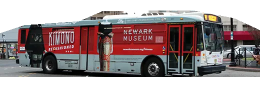

Campaign strategy
We clarify the audience, location, context, and action the campaign needs to support before moving into creative.
Out-of-home advertising
We help brands think through real-world visibility: billboards, transit, wrapped buses, event placements, and outdoor campaigns that need to be instantly clear, visually strong, and on spec.

How we help
This page is ready for more campaign details later. For now, it establishes out-of-home as part of the service mix, with room to add proof points from Times Square billboards, wrapped buses, and other high-visibility placements.
We clarify the audience, location, context, and action the campaign needs to support before moving into creative.
We reduce the idea to what can be understood quickly from a sidewalk, car, train platform, event floor, or passing bus.
We design for distance, scale, placement constraints, brand consistency, and the production specs each format requires.
Placeholder for campaign examples, including Times Square billboard work, wrapped buses, market details, and performance context.
Featured Project
For the Kimono Refashioned campaign, the creative needed to work at city speed: bold enough for Times Square, flexible enough for wrapped buses, and clear enough for a passerby to understand in seconds.
Original Museums on Us campaign creative rendered here as a Times Square placement, with bus wrap proof pulled from the existing portfolio.